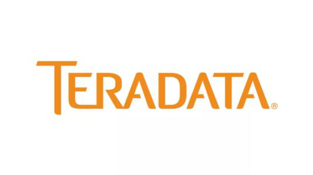

数据管理技术

国内外研究现状
近五年基于人工智能的数据库技术究领域，国外学者总共发表顶级会议论文32篇，国内学者总共发表顶级会议论文12篇，说明我国基于人工智能的数据库技术研究成果强于其他国家，但仍与美国有较大差距。相对于第一篇基于人工智能的数据库技术级会议论文，基于人工智能的数据库技术现较早，但成果较少。一方面由于AI与DB系统在代码、算子、硬件等方面都存在较大差异，较难融合；另一方面，植入AI算法需要修改数据库内核，试周期较长。
声明性的语言模型
面向AI的高级语言-to-SQL。实现用类SQL语言声明机器学习算法。首先，目前人工智能和数据查询有不同的执行平台，并提供跨计算引擎优化能力；其次，人工智能程序需要完整地给出算法逻辑，我们需要通过逻辑抽象简化人工智能技术的使用方法。最直接的方法是将SQL翻译成不同语言的脚本，再分发到不同平台上执行。
面向AI的SQL的完备性。根据机器学习算法不同阶段的特点合理设计SQL语法，提高语言模型的扩容能力和执行效率。面向 AI的SQL的完备性主要包括两方面内容。一方面，SQL语言模型需要有独立的描述AI问题能力，不需要用户额外嵌入其他语言脚本。另一方面，支持全过程的AI操作，即基于SQL语句就可以完成所有的数据和模型操作，不要再底层转换为其他语言再执行。
面向AI的SQL智能推荐。声明性的智能分析服务，在SQL上进一步封装操作，简化模型定义的同时提升对不同计算引擎的支持能力。SQL可以支持跨一个或多个处理器和磁盘协调数据的批量处理，但对于普通用户来说使用SQL仍然不够直观，所以另一类研究进一步将SQL封装成动态图、电子表格等，利用可视化技术提供更加智能的推荐服务。
AI算法优化引擎
面向AI的优化引擎：面向AI的优化引擎主要根据查询树生成统一的执行计划，对于异构的计算平台，根据计划中的算子类型下发到指定的计算平台上分别执行；否则由数据库计算引擎直接执行。 AI算子的代价估计：面对声明性的AI问题，如果有多个实际的AI算法可以解决，那么评估这些AI算法的执行代价对于提高解决问题的效率就有很大的意义。 AI算法的自动生成：用户只需给出数据之间的逻辑关系而不用学习大量的机器学习框架，数据库的关系代数自动生成人工智能算法，内置的AI算子对人工智能算法进行选择。 AI模型的版本管理技术：构建机器学习模型时将前期的模型保存在历史版本中以便用户在构建新模型时随时查看以往版本进行参考。
AI异构执行引擎
异构AI计算引擎：一些数据库集成了异构的计算框架和大规模内存计算能力，可以有效提高处理人工智能算法的能力。 分布式AI加速架构：通过水平扩展，将机器学习的任务下发到多个物理节点上，利用物理并行方式加速AI算法的执行效率；通过数据压缩将尽可能多的数据放到内存中进行计算，进一步提升整体执行效率。 AI执行优化技术：基于数据库内核执行AI操作，提高执行效率；基于AI芯片优化AI算子的执行，提高计算效率；基于新型数据库系统支持AI技术，对整个执行流程进行优化。 智能数据分析技术：推出可扩展的机器学习模型，使数据分析师能够使用熟悉的SQL直接在BigQuery内部的大型数据集上构建和部署机器学习模型。将机器学习和近似查询处理技术相结合，对数据库的初始数据应用已知的样本信息，以最小化磁盘访问，平衡响应时间和回答准确性。
面向AI的数据处理模式
高质量的数据是优秀AI算法和模型产生的基础，但是实际上数据大多并不能够达到一个优秀的水平，其中往往存在大量错误。 面向AI的数据发现技术。
面向AI的数据发现技术
统一的数据处理架构
Teradata-DL平台提供了统一的数据处理架构，重新记录不同的数据是如何被存储、管理、分发和持久化的。Teradata数据库是一个能够通过ASTER分析系统进行数据发现的传统关系型数据库，其包括对非结构化和半结构数据的分析和高级分析。
数据编排
随着来自不同系统、业务流程的数据的容量、速度、多样性的增长，企业需要面对更加复杂的数据访问、发现、管理、安全等问题，导致查找和验证数据集变成一个复杂的手动过程。因此，BigQuery ML提供了数据目录技术，用于数据发现、管理和简化。为了帮助企业快速发现、管理和理解他们的数据资产，数据目录提供完全管理和可扩展的元数据管理服务。
面向AI的数据处理模式
自动生成数据流水线
Shang等人提出了一款迭代式生成数据工作流的工具Alpine Meadow。Meadow会模仿一个有经验的数据科学家对数据进行检查，并根据经验，对特征缩放、嵌入、数据清理等做出高层决策。Meadow把这个过程映射为一个“数据处理流水线”，并将所有可能抽象成一个有向无环图上的搜索空间。基于经验自动学习构建数据处理流水线的规则。
自动化数据管理
智能数据库系统可以为大规模共享数据提供智能化的管理服务。其集成了AI组件，能够实现数据搜索的各类智能操作。同时其也集成了大量数据优化技术，帮助更好的融合不同数据。
面向AI的数据融合技术
降低数据生成开销
现实生活中数据集往往是由多个存在主外键依赖的表组成的，结构复杂。将他们直接连接再进行特征选择，需要消耗大量时间。因此，Kumar等人提出了一种分析主外键对机器学习表现和准确度影响的方法。基于信息论的方法增加价值评估功能，评估每个原始特征对于模型的“有用程度”，然后评估特征之间的相关性，基于模型特点在冗余-相关性之间折中。
简化数据建模
数据库研究的一个主要目标是将附加语义合并到数据模型中。经典的数据模型由于无法表示和处理许多实际应用中可能出现的不精确和不确定的信息而受到影响。因此，模糊集理论已广泛应用于各种数据模型的扩展，满足复杂对象不精确和不确定性建模的需要。为了更恰当地描述这种关系并更好地利用现有值，Lai等人提出了一种不完全数据建模方法来填补缺失值。
智能数据融合
训练集数据的结构和价值可能有很大差异。企业数据池多基于Hadoop等大数据引擎，需要将大量业务相关的数据源聚合在一起，然而这种数据聚合的速度对于机器学习来说太慢了。我们可以利用大规模GPU芯片组快速进行数据编解码和类型转换；其次，IBM Watson Analytics还允许直接查询各种数据库，包括Cloudera Impala、MySQL、Oracle等。